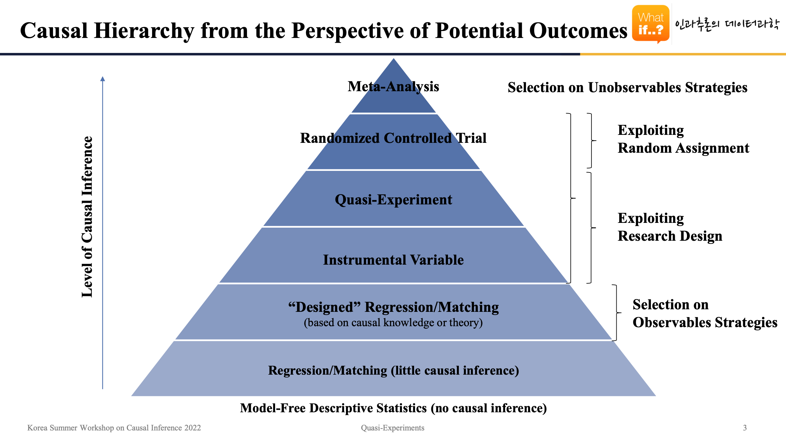
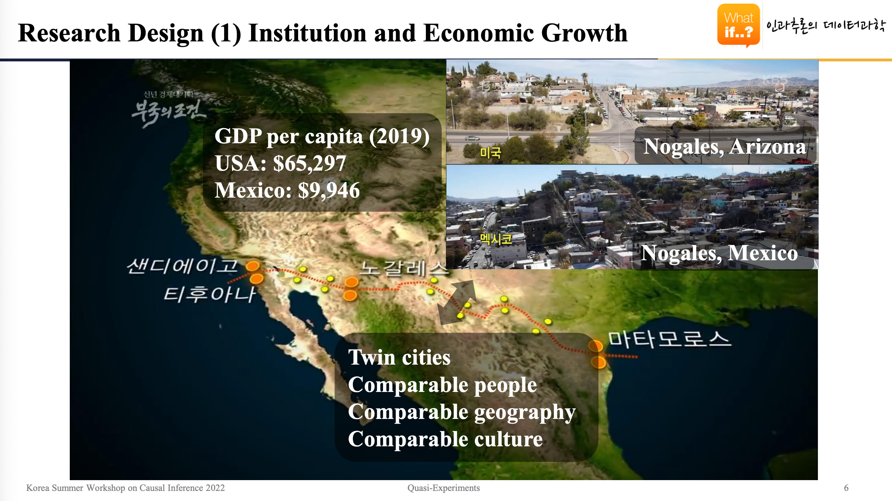
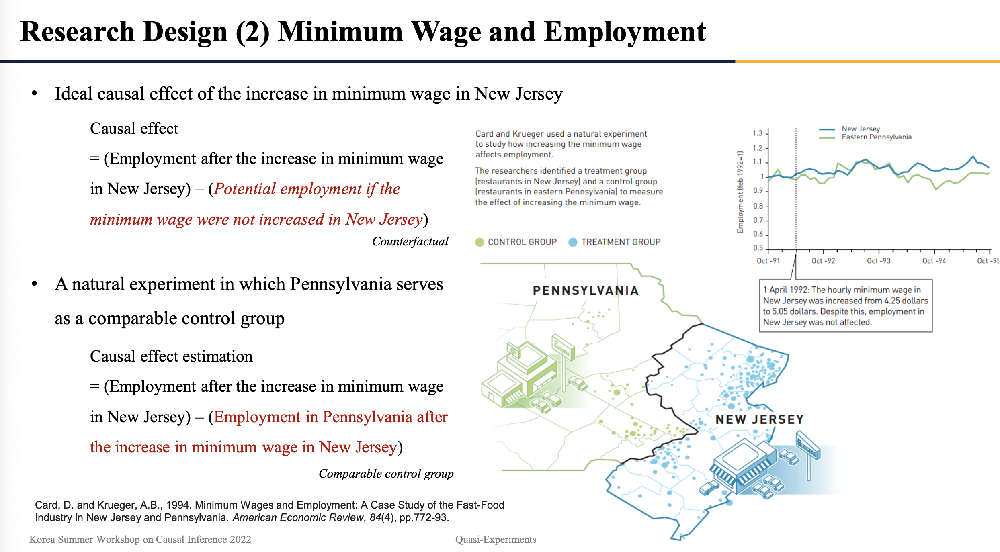

Quasi Experimental Design
Potential Outcome Framework 관점의 인과추론 방법론 중 하나인 준실험설계 소개
오늘은 Potential Outcome Framework 관점의 인과추론 방법론 중 하나인 준실험설계(Quasi-experimental design)에 대해 소개하고자 합니다. Potential Outcome Framework 관점에서 준실험설계는 RCT(Randomized Controlled Trial)가 불가능한 상황에 고려해볼 수 있는 방법론 중 가장 높은 수준의 인과추론을 수행할 수 있는 방법론입니다. Potential Outcome Framework 하에서 인과추론은 결국 이상적인 Counterfactual1과 가장 가까운, 비교가능한 Control 그룹을 찾아내는 것이라 할 수 있는데요. 이러한 Control 그룹을 구성하는 가장 효과적인 방법은 무작위 할당(Random assignment)라고 할 수 있겠습니다. 이를 저희는 RCT라고 표현을 하고, RCT는 Potential Outcome Framework 하에서 인과 효과를 추정하는 일종의 Gold Standard2이기도 하죠. 온라인 비즈니스모델을 갖는 기업에서 순수한 실험 효과, 처리의 순수한 효과를 보기위해서 수행하는 A/B test도 RCT의 일종이라고 볼 수 있습니다.
이렇게 항상 RCT를 통해 인과적 효과를 추론할 수 있으면 좋겠지만, 상황적, 윤리적 관점에서 바라보았을 때 Context에 따라 RCT가 불가능한 경우는 정말 많이 존재합니다. 이때 우리는 준실험설계를 생각해볼 수 있어요. 준실험설계의 아이디어는 간단합니다. 무작위 할당 없이도 적절한 연구 디자인을 활용한다면, 충분히 비교 가능한 Control 그룹을 구성함으로써 인과추론이 가능해질 것이라는 거죠. 지금은 이 말이 조금 이해가 안되실 수도 있는데요. 준실험설계를 이용해 인과추론을 수행했던 대표적인 사례들을 소개하면서, 이에 대해 자세히 이해해보는 시간을 가져보도록 하겠습니다.
Potential Outcome Framework 관점의 Causal Hierarchy
잠깐 준실험설계의 대표 사례들을 이야기하기 전에 Potential Outcome Framework 관점의 Causal Hierarchy를 훑어보고 가겠습니다. 앞서 준실험설계는 RCT가 불가능한 상황에 가장 높은 수준의 인과추론을 수행할 수 있게끔 해주는 방법론이라고 말씀을 드렸었는데요. 다음의 Causal Hierarchy 그림에서도 이를 확인하실 수 있습니다.

위 그림은 Potential Oucome Framework 관점의 방법론들 각각이 갖는 인과추론의 수준을 계층적으로 표현한 그림인데요. 순서대로 짤막하게 설명을 하고 넘어가겠습니다.
메타분석(Meta-Analysis): 여러가지 실험의 결과를 종합한 것
RCT: 단일 수준에서 가장 높은 수준의 인과추론을 가능하게끔 해줌
준실험(Quasi-Experitment): 특정 가정하에서 RCT에 가까운 인과추론을 수행할 수 있는 강력한 도구
도구변수(Instrumental Variable): 내생성(Endogeneity)3을 제거하기 위한 도구로, 항상 이러한 도구변수를 찾을 수 있는 것은 아님
“Desgined” Regression/Matching (based on causal knowledge or theroy): 도구변수를 찾을 수 없는 상황에 마지막으로 고려할 수 있는 방법. 기본적으로 Regression이나 Matching은 인과추론에 한계가 굉장히 많음. 그래서, 특별히 주의를 기울인 단순한 Regression/Matching과 구분하기 위해 “Designed”라는 단어를 앞에 붙여 놓으셨다고 함.
Regression/Matching (Little causal inference): 잘 디자인 되지 않은 단순한 Regression/Matching의 인과추론 수준은 매우 낮음
Model-Free Descriptive Statistics (No causal inference): 평균과 같은 기술 통계량들
여기서 RCT부터 도구변수까지는 Selection on Unobservables Strategies라고 해서, 관측되지 않은 요인에 의한 Selection bias(선택편향)까지 통제할 수 있는 전략에 해당합니다. 그리고, RCT는 무작위 할당을 활용(exploit), 준실험과 도구 변수는 연구 디자인을 활용합니다. 마지막으로, “Designed” Regression/Matching은 Selection on Observables Strategies로 관측된 요인에 의한 Selection bias만을 통제할 수 있는 전략에 해당합니다.
사례 I: 사회제도가 경제 성장에 인과적인 효과를 미치는가?
사회제도가 경제 성장에 미치는 영향은 경제학에서 굉장히 오래 연구된 주제라고 합니다. 간단해 보이는 가설이지만 데이터로 부터 이를 추론하기란 만만치않습니다. 우선 실험이 불가능한 가설이에요. 즉, RCT로는 확인이 불가능한 가설이란 얘기죠. 그럼, 이제 우리에게 필요한 것은 비교가능한 Control 그룹을 찾는 노력입니다. 우리가 가장 쉽게 떠올릴 수 있는 예로는 우리나라와 북한의 경우가 있습니다. 그러나, 두 국가는 본 문제에 있어서 ceteris paribus4를 만족시키기란 매우 어렵습니다. 두 국가 간의 차이에는 사회 제도 뿐아니라 수많은 요소들이 존재하죠.
이 문제를 해결하기 위해서는 사회 제도만 다른, 비교 가능한 쌍둥이 국가 또는 쌍둥이 도시를 가져와서 비교를 수행할 필요가 있습니다. 그 중 대표적인 사례가 미국 애리조나 주와 멕시코에 위치한 서로 같은 이름을 지닌 Nogales라는 쌍둥이 도시를 통해 비교한 사례라 할 수 있습니다.

이름이 같은 것에서 알 수 있듯이, 역사적으로 Nogales는 오랫동안 같은 도시 였다가 미국과 멕시코의 국경이 달리되며 절반은 미국의 사회제도 하에, 절반은 멕시코의 사회 제도 안에 남게 된 것 입니다. 즉, 사회제도 외에 인구 구성, 문화, 도시 인프라, 지리적으로나 두 지역은 굉장히 유사할 것이고, 이에 따라 사회제도가 경제 성장에 미칠 수 있는 영향을 보고자할 때 둘은 비교 가능한 그룹이라 할 수 있는 것이죠.
사진 속에서 두 도시의 2019년 1인당 GDP를 비교해보시면 아시겠지만, 미국의 사회제도 속에서 노갈레스는 멕시코의 노갈레스보다 약 6배 이상 부유한 도시가 되었습니다. 이렇게 인구 구성이나 지형, 종교, 문화가 모두 비교가능한 쌍둥이 도시들 간에 경제 성장의 차이를 바탕으로, Potential Outcome Framework 하에서 사회제도가 경제 성장에 미치는 영향에 대해 어느정도 추론을 해볼 수 있겠죠. 이러한 방식으로 자연 상황에서 비교 가능한 Control 그룹을 구성함으로써, 최대한 인과적인 효과를 발라내보자는 것이 바로 준실험설계라고 할 수 있겠습니다.
사례 II: 최저임금이 고용률에 영향을 미치는가?
두 번째 사례는 2021년 노벨경제학상 수상자인 David Card 교수님의 대표적인 연구 사례이기도 합니다. 이 문제 또한 가설만 보면 꽤 간단히 보이지만, 이를 데이터를 통해 추론하기란 꽤나 어렵습니다. 최저임금이 상승될 경우 고용률은 감소할 것 이라는 주관적인 결론을 쉽게 내리는 경향이 있는 가설인 만큼, 데이터를 통한 객관적인 검증이 꼭 필요로 되는 가설이 아닌가 하는 생각도 듭니다.

David Card 교수님이 이 가설의 검정을 위해 찾아내신 비교가능한 두 그룹은 펜실베니아와 뉴저지였습니다. 1992년 펜실베니아와 뉴저지의 최저임금을 비교함으로써, 최저임금이 고용률에 미치는 영향을 검증해보고자 하셨죠. 해당 가설에 대한 최초의 실증 분석 시도이기도 했습니다.
당시 펜실베니아와 뉴저지의 최저임금이 비교가능했던 이유는, 1992년 4월 뉴저지의 최저임금이 4.25달러에서 5.05달러로 상승한 데에 있습니다. 반대로, 펜실베니아의 최저 임금은 그대로였고, 두 주는 인접한 지역에 위치했죠. Card 교수님은 두 주를 나누는 경계 주변에 위치한 레스토랑의 고용률을 비교해보셨습니다.
결과는 위 사진의 우측 위 그래프를 보시면 알 수 있듯, 해당 가설에 대해 사람들이 쉽게 내리는 주관적 결론과는 조금 달랐습니다. 두 주 간에 고용률 변화는 거의 없다가, 오히려 뉴저지의 고용률이 더 높아지는 추이를 보였죠. 즉, 최저임금을 올린다고 해서 고용률이 항상 낮아지는 것은 아니라는 것입니다. 우리가 별 생각없이 특정 가설에 대해 내리는 결론은 꽤나 위험할 수도 있다는 것을 상기시켜 주는 대표적인 사례가 아닐까 생각해 봅니다.
맺음말
준실험설계의 아이디어는 결국 Counterfactual을 대신할 수 있는 비교가능한 Control 그룹을 찾자5는 것에 있습니다. 단, 연구자가 직접 무작위 할당을 통해 비교가능한 Control 그룹을 구성하는 것이 아닌, 자연 상황에서 비교 가능한 Control 그룹을 찾아보자는 것이고요. 이렇게, 자연적으로 발생한 상황을 마치 실험처럼 활용한다는 점에서 준실험설계는 자연 실험(Natural Experiment)이라 불리기도 합니다. 본 글에서 소개한 대표적인 연구 사례들 또한 이러한 로직으로 Control 그룹을 구성하였고요. 아울러, 이러한 연구 사례들이 시사하는 바는 Potential Outcome Framework 관점에서 준실험설계는 연구자가 무작위 할당을 통해 그룹을 배정하지 않더라도, 현실 상황을 잘 이용하여 비교 가능한 대상을 설정한다면, 충분히 합리적인 인과 관계를 추론할 수 있다는 것입니다.
본 글을 쓰는데에 기반이 된 (인과추론의 데이터과학 2022)에서는 이러한 인과 관계의 추론을 이야기하는 데에 있어서 결코 어떤 복잡한 모형이나 통계적 이론, 데이터의 양에 대한 언급은 일절 하지 않습니다. 단지, 연구 디자인을 잘 활용하여 얼마나 비교 가능한 Control 그룹을 구성할 수 있었는 지에 대해 이야기했죠. 이러한 연구 디자인은 따로 정형화되어 있지 않으며, Context에 따라 매우 다양한 디자인이 존재합니다. 이 부분에 있어서 도메인 지식은 정말 중요한 역량이 될 것으로 보이며, 동시에 자신이 풀고자 하는 실험이 불가능한 인과 추론 문제를 자연 상황에서 어떻게 풀 수 있을지 고민해보는 습관 또한 매우 중요해 보입니다.
참고문헌
각주
처리 그룹이 만약 처리를 받았지 않았으면 발생했을 잠재적 결과(Potential outcome)을 말함. Counterfatual이 존재한다면, 우리는 이를 처리 그룹의 결과와 비교함으로써 처리의 순수한 인과 효과를 알 수 있을 것임. 그러나, Counterfactual은 현실에서 관측이 불가능함. 이를 인과추론의 근본적 문제(Fundamental problem of Causal Inference)라고 표현함.↩︎
산업에 있어서 최적의 표준을 이르는 말↩︎
계량경제학(Econometrics)에서 주로 사용하는 용어로, 선형 모형에서 설명변수와 오차항의 상관이 0이 아닌 경우를 의미. i.e. \(cov(x_i, e) \neq 0\). 인과추론을 위해서는 이러한 내생성을 통제하는 것이 매우 중요하다.↩︎
Selection bias를 없애기 위한 조건으로, 처리(treatement, 본 문제에서는 사회제도라고 할 수 있음)를 받았다는 사실만 제외하고 나머지 모든 요인이 동일해서 서로 비교 가능하다는 조건을 라틴어로 표현한 단어이다. 즉, 이상적 Counterfactual을 구할 수는 없지만, 만일 ceteris paribus를 만족하는 control 그룹이 있다면 이를 대신할 수 있을 것이다. 이것이 Potential outcome framework 관점의 causal inference problem에 해당한다.↩︎
RCT는 연구자가 직접 무작위 할당을 통해 비교 가능한 Control 그룹을 구성합니다. 즉, 준실험설계는 비교가능한 Control 그룹을 “찾자”는 것이고, RCT는 비교가능한 Control 그룹을 무작위 할당을 통해 직접 “구성”하자는 것이죠.↩︎
라이센스
인용
@online{방태모2023,
author = {방태모},
title = {Quasi Experimental Design},
date = {2023-03-26},
url = {https://taemobang.com/posts/2023-03-26-Quasi-Experimental-Designs/},
langid = {kr}
}